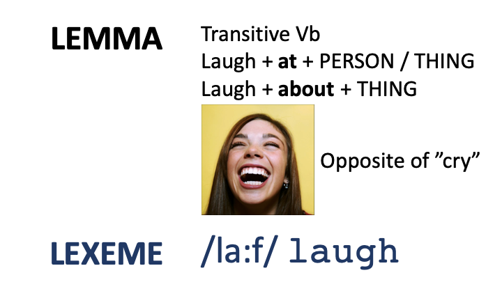

03 - Lexical representations¶
How are words stored?¶
Data from production errors¶
Have a look at these errors. How/why have they occured?
- They misunderestimated me
- They can refudiate what this group is saying
- I'm on my way to the lection
- I don't expose anyone will eat that
These errors are known as 'blends'. Two words are activated, and combined into one, e.g. expect + suppose -> expose / misunderstand + underestimate -> misunderestimate. Note that when this happens there is often a phonological 'pivot' (my terminology) in the middle of word, i.e. material shared across both words. For exampel, the p in expect / suppose
Characteristics: (1) Multiple Semantic Activation: overlapping meanings (2) Phonological processes in selection: similar word-internal phonology.
Process by which blends are formed rapid carefree activation (i.e. resulting in errors) with rigorous monitoring.
What does it tell us about words? They are stored in semantic and networks (activation of multiple words with overlapping meanings). There is activation across domains: semantic activation of multiple competitors, and phonological processes involved in blending (the use of a 'pivot'). The system biases speed over accuracy, but recovers from error due to a monitoring system.
Meaning-related lexical relationships¶
Hyponymy¶
'Hypo' = under, 'nym' = word
Plant > Tree > Sycamore / Plant > Flower > Daisy / Furniture > Chair > Stool
Hyponymy can be characterised by superset/subset relationships. As you go upwards in the hierarchy the extension (i.e. the set of potential referents) expands. For example, there are more things in the set of plants (top of the hierarchy) than the set of trees (middle of the hierarchy). By contrast, as you go upwards in the hierarchy, the intension (list of definitional properties) narrows. For example, furniture = large practical object in the home. Chair = large practical object in the home + you sit on it. Stool = large practical object in the home + you sit on it + it has no backrest.
Tree is a hyponym / subordinate of Plant
Plant is a hyperonym / superordinate of Tree
Mid-level categories are (a) more rapidly named, (b) more easily visualised, (c) acquired earlier
Words which exist at the same level are called co-hyponyms or coordinates, e.g. daisy, begonia, Tulip / flower, bush, tree / chair, sofa, wardrobe.
Synonmy¶
'Syn' = together, 'nym' = name/word
Words with identical meanings.
Very few genuine synonyms. When words are identical in denotation (event or thing they refer to), they differ in connotation (set of associations they trigger), e.g. chap / bloke / geezer (who would you buy a used car from?) , fiesta / knees up / bash / soirée (which would you prefer to go to?)
There are very few genuine synonyms, i.e. where denotation and connotation are teh same. Some examples are words differing across dialects or varieties of a language, e.g. tap / fawcett, pavement / sidewalk, and some grammatical words, e.g. however / nonetheless
Antonmy¶
'Anto' = opposite, 'nym' = name/word
Words with opposite meanings. Can be gradable (e.g. slightly hot, very cold) or non-gradable (e.g. *very dead)
Sometimes there is no obvious opposite, e.g. the opposite of bald. There is a 'lexical gap'
Homonymy¶
'Homo' = same, 'nym' = name/word.
Same form, but no obvious meaning relationship. Words have similar forms due to 'historical accident'.
May have same root (in which case there is a tenuous meaning relationship), e.g. a table of numbers, versus the kitchen table
Or may have a different root, e.g. bay tree [LATIN baca], the ship entered the bay [OLD FRENCH baie], the dogs bayed [OLD FRENCH abai]. The fact that these words, with different an unrelated meanings, have the same pronunciation is a historical accident.
Polysemy¶
'Poly' = multiple, 'sem' = meaning.
Same form, and different but related meanings. The meaning relationship is mentally represented
Prepositions are notoriously polysemous, e.g. over = straight movement in contact with a plane, e.g. he ran over the field, or over = two dimensional movement across a bounded plane, e.g. the balloon floated over the city (or possibly there is no movement at all), or over = random movement covering a plane_, e.g. he poured ketchup over the chips_.
Other polysemous words;
- He went to bed, a river-bed, flower bed, the steak was served on a bed of lettuce
- The cup was full, the room was full, she has a full schedule, she leads a full life.
Are meaning relationships systematic or random? According to Charles Fillmore (e.g. Fillmore & Atkins, 2000), there is a central sense, with all meanings radiating from this central sense, e.g. all meanings of over share the idea that the 'figure' (smaller object) is, at some stage, above the 'ground' (larger object). All meanings of bed involve a flat surface made of a relatively soft material. When teaching a polysemous word, it may be best to start with the central meaning (or 'sense') of the word, and later teach the more peripheral meanings (e.g. Tyler & Evans, 2004)
Homonyms versus Polysemes¶
Both describe words with same form, but different meanings. The only difference is whether the meaning relationship is mentally represented. Moreover, according to Fillmore's approach meaning relationships among polysemous words are structure / systematic. The only way to test this is via personal intuition.
Lexical gaps¶
A language lacks a word where there should be one. Easily demonstrated with antonyms
- Opposite of bald?
Many English kinship terms are vague, e.g. English cousin can be used for a variety of different relations, while Sudanese has different words for every type of cousin.
Loan words, e.g. kitsch & schadenfreude, are used to fill lexical gaps. A recent load word is hygge (Danish word referring to a lifestyle / way of viewing the world which is characterised by an appreciation of life's little comforts, e.g. family boardgames, and cakes by an open fire...)
Form-related relationships¶
Homophony¶
Same spoken form, different written forms (with different meanings)
e.g. might / mite, leak / leek
Homography¶
Same written form, different spoken forms (with different meanings)
e.g. bow, minute
The strict definition of homonymy¶
The definition we have learnt is:
A word with the same form, but two different (but unrelated) meanings.
When I refer to the same form, I am referring to the same spoken AND written form. However, there is a stricter version of homonyms, whereby the word can share EITHER the same spoken or written form. If you adopt this definition, then there is an overlap between homonyms, homophones and homographs.
I have adopted the looser definition because (a) it is the most widely used definition, (b) if you adopt the narrow definition, the situation gets very confusing. If you really wish to see how all of the definitions intersect, then wikipedia has a very good page on this.
Exploring semantic networks¶
Word association norms¶
A says a word, and B says the first word that comes into their heads
Coordinates are the most frequent category, e.g. if the prime is cat, the participant says dog. Next are collocations (words which tend to co-occur, e.g. fish and chips, cats and dogs). Then come superordinates, e.g. cat primes pet, and finally subordinates (cat primes Siamese).
Word association tasks conducted with children with Developmental Language Impairments find tentative evidence for reduced semantic networks, e.g. large number of responses which are very odd, e.g. Spoon -> Disney, or based on phonological similarity, e.g. cow -> how (Sheng & McGregor, 2010)
Semantic fluency tasks¶
A asks B to say as many words as possible from a single category, e.g. animals, things you take on holidays. When asked to list animals, a typical response might be
Dog, cat, rabbit -- lion, tiger -- fish, whale, dolphin
Responses tend to be grouped into clusters, e.g. the above response contains a DOMESTIC ANIMAL cluster, then a WILD ANIMAL cluster, then a SEA MAMMAL cluster.
- Poorer semantic fluency in developmental language disorders and autism (Kail & Leonard, 1986; Bishop & Norbury, 2005). For example, they produce fewer words and clusters
- Some have suggested that semantic fluency tasks can be used to predict onset of Alzheimmers: few clusters, cluster members and switches between clusters (Gomez & White, 2006)
Lexical priming tasks¶
Does hearing word X spead up recognition / recall of word Y?
Exploring word production using lexcial speech errors¶
Types of error:
- Blend, e.g. lection
- Phonological substitution (malapropism), e.g. The Chinese emperor had many concubines -> porcupines, Brexit means Brexit -> breakfast (there are amusing clips of politicians and newsreaders accidentally calling Brexit "breakfast". Have a look for these you YouTube.
- Semantic substitution, e.g. Give me the hammer -> screwdriver.
- Tip of the tongue effects = we know the meaning of the word we want, but phonological access is partial
Available evidence suggests 2-stage model: (1) Activation of meaning, (2) Activation of form.
Phonological substitutions happen when the right meaning is activated, but the wrong form is chosen. Tip of the tongue effects are similar. We know the meaning, but in this case we can't activate the right form. In semantic substitution effects we accidentally choose the wrong meaning, and then select the form which corresponds to that meaning.
The meaning level is called the lemma level, while the form level is called the lexeme level.

5-minute Exercise¶
How many 'units of meaning' in the following words:
- Dogs
- Laughed
- Working
- Believe
- Unbelievable
- Sang
Bibliography¶
Kail, R., & Leonard, L. (1986). Word-finding abilities in language-impaired children.
Bishop, D. V. M., & Norbury, C. F. (2005). Executive functions in children with communication impairments, in relation to autistic symptomatology: I Generativity. Autism, 9(1), 7–27.
Fillmore, C J; Atkins, B T S (2000). "Describing polysemy: The case of "crawl"". In Ravin, Y; Leacock, C. Polysemy: Theoretical and computational approaches. Oxford: Oxford University Press. pp. 91–110., p.100.
Gomez, R. G., & White, D. A. (2006). Using verbal fluency to detect very mild dementia of the Alzheimer type. Archives of Clinical Neuropsychology, 21(8), 771–775.
Sheng, L., & McGregor, K. K. (2010). Lexical–semantic organization in children with specific language impairment. Journal of Speech, Language, and Hearing Research, 53(1), 146–159.
Tyler, A., & Evans, V. (2004). Applying Cognitive Linguistics to Pedagogical Grammar: The Case of Over. Cognitive Linguistics, Second Language Acquisition, and Foreign Language Teaching, 257.